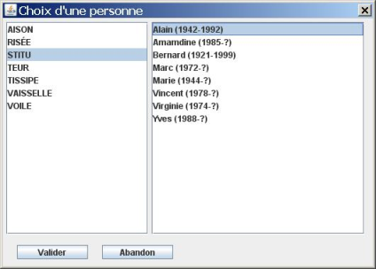

Cette possibilité n'est accessible que quand votre arbre courant est vide. Quand vous cliquez sur le bouton ou allez dans le menu Personnes et choisissez Ascendance, GénéGraphe ouvre une fenêtre :
Cliquez sur le bouton « Choisir » pour sélectionner la personne qui sera à la base de l'ascendance voulue.
Vous choisissez un nom de famille dans la partie gauche, la liste des personnes portant ce patronyme s'affiche dans la partie droite.

Sélectionnez une personne et cliquez sur OK. Le nom de la personne sélectionnée s'affiche dans la fenêtre.

Vous choisissez le nombre de générations à ajouter au dessus de la personne sélectionnée (dans la limite de 6). Vous choisissez d'ajouter les femmes, les hommes ou les femmes et les hommes.
L'ascendance masculine d'Amandine STITU sur 2 générations donne :
L'ascendance féminine d'Amandine STITU sur 2 générations donne :
L'ascendance complète (femmes et hommes) d'Amandine STITU sur 3 générations donne :